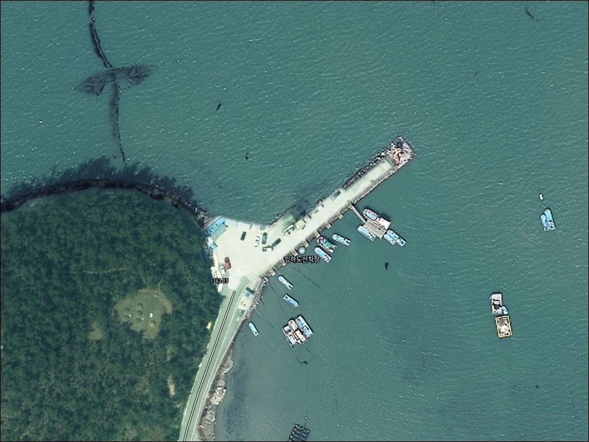
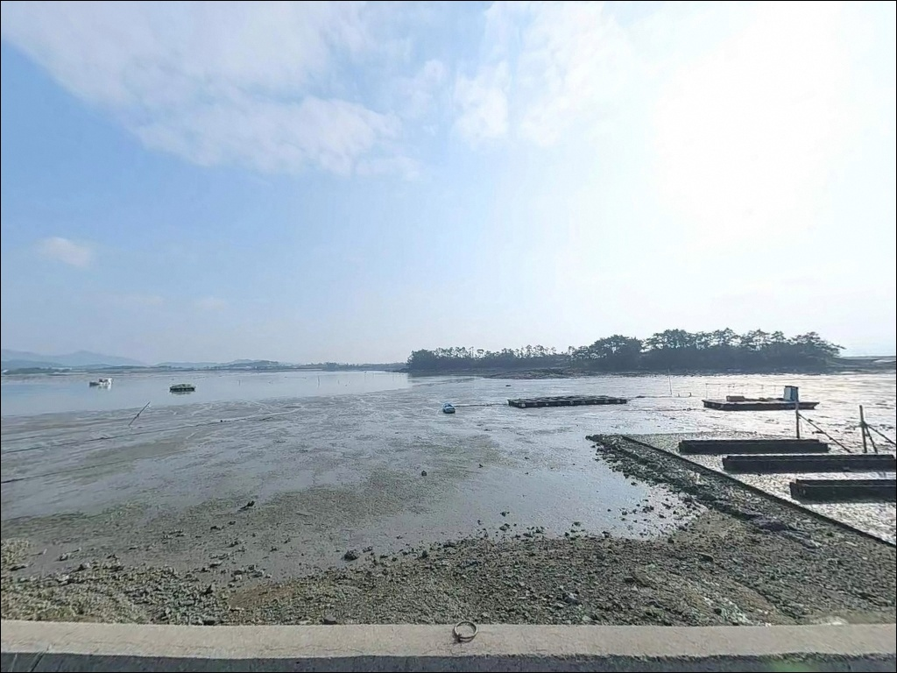
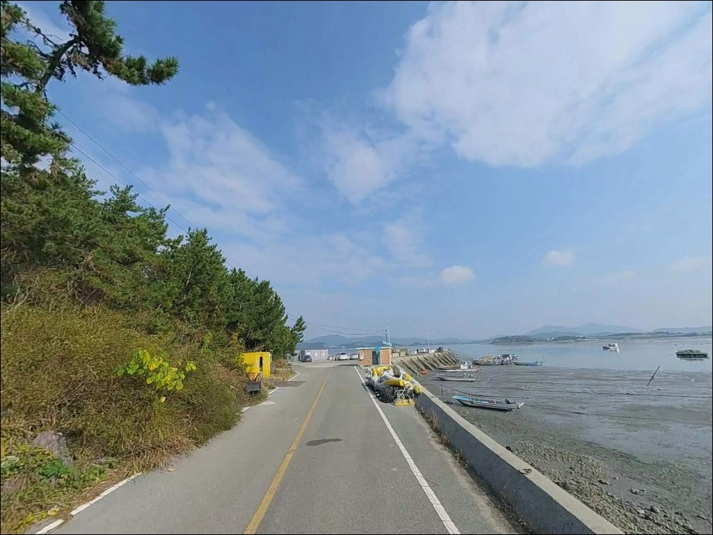
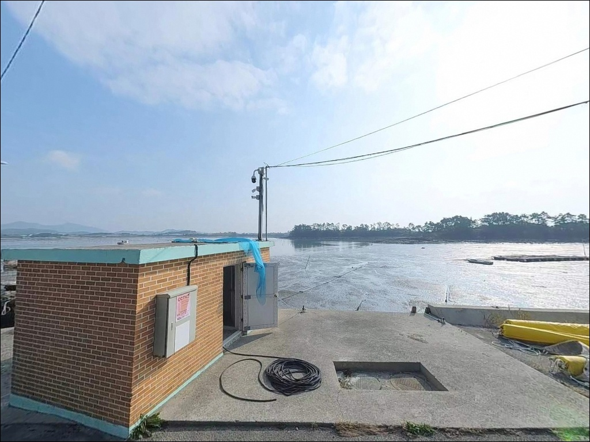
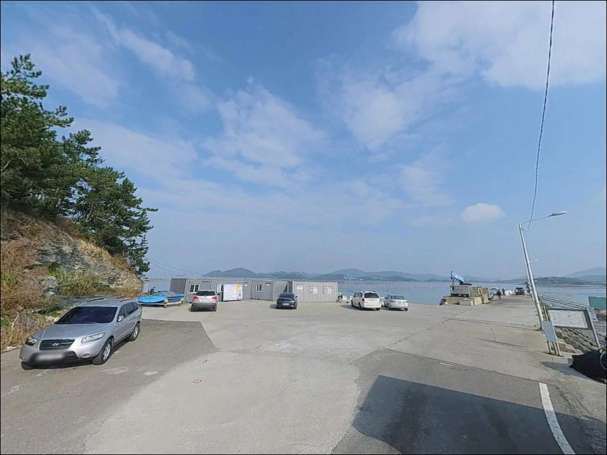
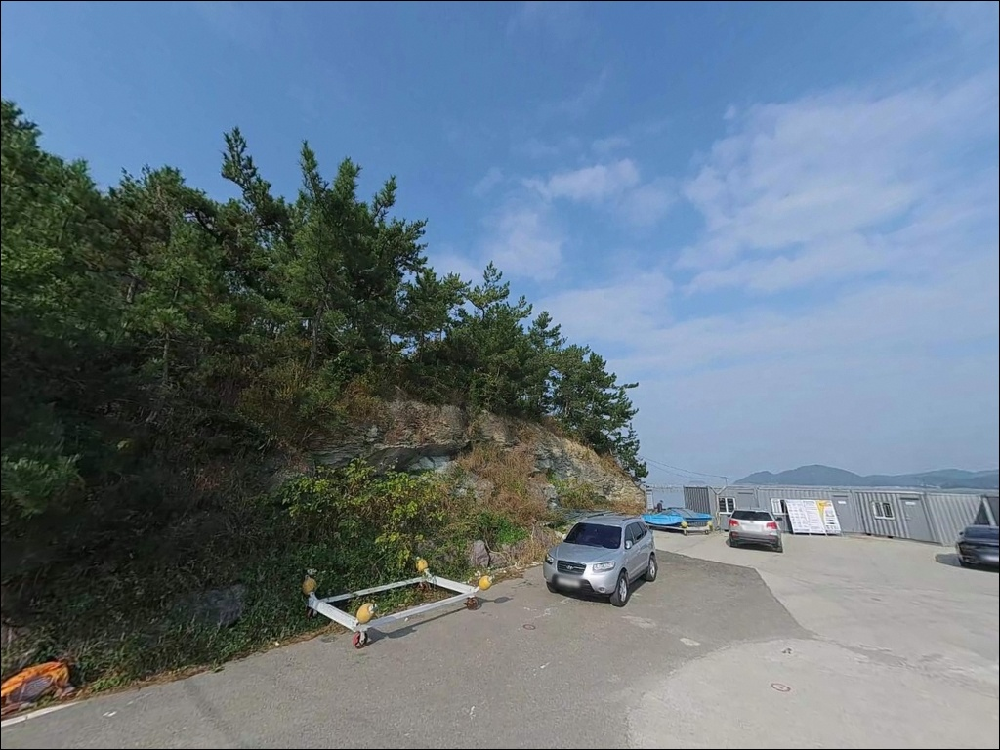
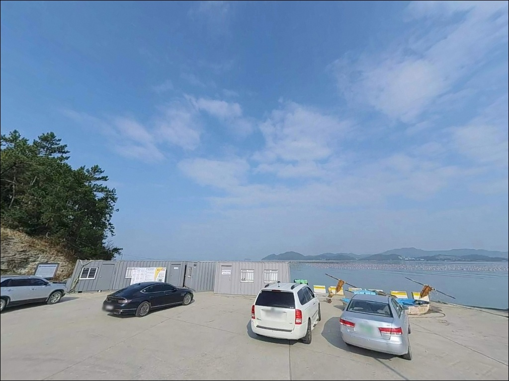
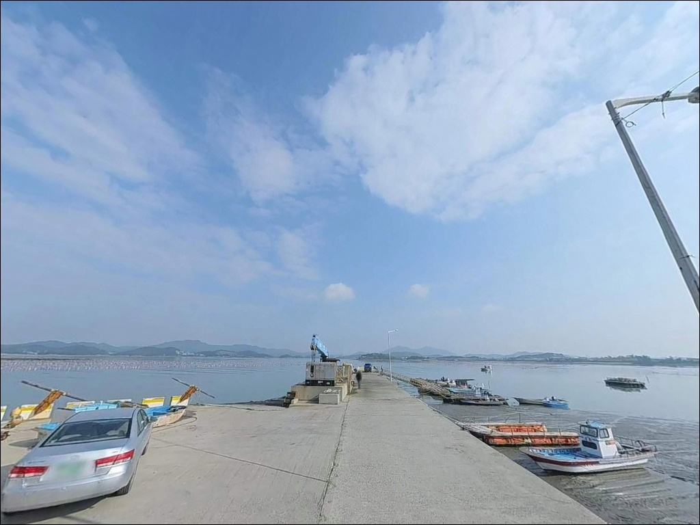
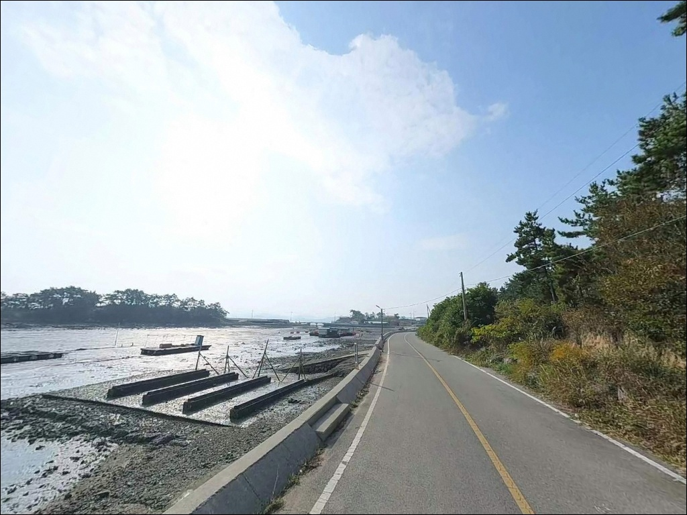

이 페이지에는 광고(제휴 링크 포함)가 있으며, 광고 링크를 통해 구매하면 운영자가 판매 수익 또는 수수료를 받을 수 있습니다. 포인트 사진: 카카오맵 스카이뷰·로드뷰. 이 페이지의 지도·사진 이미지는 카카오맵의 실제 서비스 이미지와 다를 수 있습니다.

임하도선착장
전남 해남군 문내면 예락리 1339-5
울돌목 조류 영향권에 있는 포인트에서
물때를 건너뛰면
파도막이 끝단은 순식간에 채비를 쓸어가는
구간으로 바뀝니다.
강조류 타이밍에는 낚시보다
채비 손실이 먼저 시작되는 것이
이 수역의 기본 특성입니다.
임하도는 2010년 완공된 임하교(길이 180m, 너비 8m)를 통해
육지와 연결된 연륙도입니다.
2025년 어촌뉴딜300 사업 준공으로
파도막이 정비와 공중화장실 신축이 완료되었으며,
서남해 방면으로 열린 지형에서
숭어 이동 경로 중간 기착지에 해당하는 수역입니다.
이 글은 임하도선착장의
진입 환경, 물때 판단 기준,
지형 기반 낚시 여건과 스타일별 접근법에 집중합니다.
조황 단정이나 특정 어종 보장은
이 글의 범위에 포함되지 않습니다.

임하교 너비가 8m로 확보되어 있어
소형 SUV와 일반 승용차는
진입에 무리가 없는 구조입니다.
다만 섬 내부는 30여 세대 규모의 어촌 마을로,
마을을 지나 선착장에 이르는 단선 구조입니다.
마을 내 도로 폭이 넉넉하지 않아
캠핑카나 장축형 차량은
진입 전 위성지도로 도로 구조를 확인하는 것이 안전합니다.
회차 공간도 제한적인 편이므로
선착장 접근 전 회차 가능 지점을
미리 파악해 두는 것이 기본입니다.
선착장 인근 공터와
어촌뉴딜 사업으로 신축된
임하어울림센터 주변 공간이
주차 후보가 됩니다.
어선 하적과 접안이 이루어지는 구역은
어민 작업 공간입니다.
주차 위치는 어선 이동 동선과
겹치지 않는 자리를 먼저 확인해야 하며,
어촌뉴딜 사업으로 정비된 시설물을
훼손하지 않는 것이 기본 매너입니다.

임하도는 30여 세대, 100여 명이 거주하는
소규모 마을입니다.
야간 차량 통행이 적고 조용한 환경이며,
민가 밀집도가 낮아
프라이버시는 어느 정도 유지되는 편입니다.
다만 가로등 밀도는 높지 않은 구역이라
개인 조명 장비는 필수입니다.
서남해 방향으로 열린 지형이라
서풍·서남풍이 강화될 때는
파도와 바람 영향을 직접 받는 구간이 있습니다.
낚시를 마친 뒤 하룻밤 머무는 용도로는
선착장 인근 공터를 활용할 수 있으나,
기상 예보와 바람 방향 확인이 먼저입니다.
어촌뉴딜300 사업으로
공중화장실이 신축 완료된 상태라
기본 위생 환경은 이전보다 개선되었습니다.
마을 규모가 작아 야간 소음에 민감한 환경이므로
소음 발생은 자제하는 것이 기본 매너입니다.

임하도선착장에서 차량으로 5~7분 거리에
CU 해남우수영점(24시간)과
GS25 해남우수영점이 있습니다.
우수영 방면으로 나가는 동선 위에
두 편의점이 위치하고 있어,
출발 전 또는 철수 시 식수·얼음·소품 보충이 가능합니다.
선착장 내에는 어촌뉴딜300 사업으로
공중화장실이 신축 완료된 상태입니다.
낚시 용품과 연료는
편의점이 있는 우수영 방면에서
미리 채워두고 진입하는 것이 효율적입니다.
반경 3km 이내에는
별도 마트나 낚시용품점이 없는 구조이므로
완전 자급 체제로 진입하는 것이
현실적인 준비 방식입니다.
응급 상황 발생 시 해남읍까지
이동 시간이 상당합니다.
비상약품과 수분 보충용 식수는
출발 전에 완비해 두는 것이 기본입니다.

이 포인트에서 가장 먼저 확인할 것은
물때입니다.
임하도는 울돌목 조류가 시아바다로
빠져나가는 출구 측 해역에 위치합니다.
사리 전후 강조류 타이밍에는
파도막이 끝단에서 채비 컨트롤이
어려워지는 구간이 생깁니다.
바다타임에서 임하도 인근 기준 물때를 확인하고,
정조 전후를 노려 입장 시각을 맞추는 것이
기본 전략입니다.
암석해안 구조라 갯바위 이동 시
파래와 해조류로 미끄러운 구간이 있습니다.
갯바위화 또는 미끄럼 방지 신발을 착용하고,
구명조끼는 반드시 착용해야 합니다.
서풍 계열 바람이 강화될 때는
파도막이 끝단 등 외측 포인트에서
각별한 주의가 필요합니다.
원투낚시에서는 암반 혼합 저질 특성상
밑걸림이 발생하는 구간이 있습니다.
여분 채비를 넉넉하게 준비하는 것이 좋으며,
쓰레기는 전량 수거 후 반출하는 것이
소규모 어촌 마을에서의 기본 매너입니다.

임하도선착장의 핵심은 위치입니다.
우수영 울돌목에서 시아바다로 이어지는
조류 길목 출구 측에 자리하고 있어,
선착장 외측으로 조류 흐름이
꾸준히 통과하는 구조입니다.
파도막이 끝단은 울돌목 조류 변화가 큰 구간으로,
정조 전후 루어·찌낚시 반응이 살아나는 자리입니다.
해안선은 대부분 암석해안으로 구성되며,
갯바위 접근 구간이 있습니다.
어촌뉴딜 사업으로 신설된 파도막이 외측과
갯바위 경계 구간에서는
조류 세기에 따라 와류가 형성되는 자리가 생기고,
이런 지점이 어류 집결 환경을 만드는 구조입니다.
선착장 주변 수심은 3~7m 구간,
등대밑 구간에서는 10m 안팎까지
수심 변화가 큰 편입니다.
선착장 내측은 상대적으로 조류가 약하고
수면이 잔잔한 편입니다.
외측으로 나갈수록 조류 영향이 강해지는 구조라
낚시 방식에 따라 자리 선택이 달라집니다.
최신 조황은 출조 전
"임하도 낚시 조황" 또는 "우수영 낚시 조황"으로
검색해 보시기 바랍니다.

이 포인트에서 가장 먼저 고려할 방식은
찌낚시입니다.
울돌목 조류를 받는 파도막이 외측 구간은
전유동 또는 반유동 채비를
조류에 실어 흘리는 방식이 지형 조건과 맞습니다.
해남 지역 가을철 감성돔 시즌과
겹쳐서 공략하면
암석해안 갯바위 경계 구간에서
감성돔을 기대해볼 수 있는 지형입니다.
원투낚시도 이 포인트에서 운용 가능한 방식입니다.
선착장 시멘트 바닥 구조에서
멀리 던지기 편한 환경이고,
정조 타이밍에 선착장 내측에서
채비를 수로 방향으로 보내
바닥 어종을 탐색하는 방식이 어울립니다.
암반 혼합 저질이라 밑걸림이 발생할 수 있으니
봉돌 무게 조절이 필요합니다.
루어낚시는 파도막이 끝단과
갯바위 주변 구간에서 시도할 수 있습니다.
조류 흐름이 살아 있는 구간에서
라이트 지깅이나 미노우 타입 루어를
조류 방향으로 던지고 천천히 끌어오는 방식이
이 수역 지형 조건과 맞습니다.
숭어는 이 해역의 특성 어종입니다.
4월 중순부터 6월까지는 숭어 어군이
임하도 해역을 이동하는 시즌으로,
찌낚시와 루어 방식이 모두 유효합니다.
울돌목에서 시아바다 방향으로
어군이 이동하는 경로임이 확인된 수역이라,
시즌 타이밍을 맞추면 공략 가치가 있습니다.

임하도선착장 조류가 너무 강하거나
기상이 나빠졌을 때는
우수영관광지 인근 갯바위가
첫 번째 대안입니다.
진도대교 교각 하부는 울돌목 조류가
직접 지나는 구간으로,
숭어 뜰채잡이 전통 포인트입니다.
우수영관광지 주차장을 이용한 뒤
도보로 접근하는 동선이 가능합니다.
우수영항 방파제는 임하도보다
규모가 크고 외항 구조가 갖춰진 곳입니다.
찌낚시와 원투낚시 모두 운용이 가능하고
진입과 주차 여건이 안정적입니다.
임하도를 처음 찾는 경우라면
우수영항을 기점으로 삼고
임하도를 병행 탐색하는 동선이 효율적입니다.
화원면 일대 방파제 라인도
해남 서부 해안에서 고려해볼 만한 구간입니다.
같은 서남해 패턴의 포인트로,
임하도에서 여건이 여의치 않을 때
이 방향으로 이동하는 플랜을 세워두면
출조가 허탕으로 끝나는 상황을 줄일 수 있습니다.

찌낚시와 루어낚시를 즐기는 낚시인이라면
울돌목 조류를 받는 임하도의 지형 조건은
잘 맞는 구조입니다.
암석해안 갯바위와 어촌뉴딜 사업으로 정비된
파도막이가 조합된 지형에서
조류를 활용한 복합 공략이 가능하고,
숭어 이동 경로에 해당하는 수역이라
시즌 타이밍을 맞추면 기대를 걸어볼 만합니다.
반면 물때 계산 없이 강조류 타이밍에 진입하거나,
대형 차량으로 섬 내부 도로를
미리 확인하지 않고 들어가면
낚시보다 채비 손실과 진입 곤란 쪽이
먼저 시작됩니다.
물때 확인, 진입로 사전 점검, 자급 준비,
이 세 가지를 갖추고 간다면
조용한 서남해 길목 포인트를
온전히 즐길 수 있는 곳입니다.
어촌뉴딜 사업으로 정비된 공중화장실과
노을숲길이 더해진 임하도에서,
서남해 조류 길목 앞에 자리를 잡고
낚시와 차박을 겸하는 출조는
준비한 만큼 돌아오는 포인트입니다.